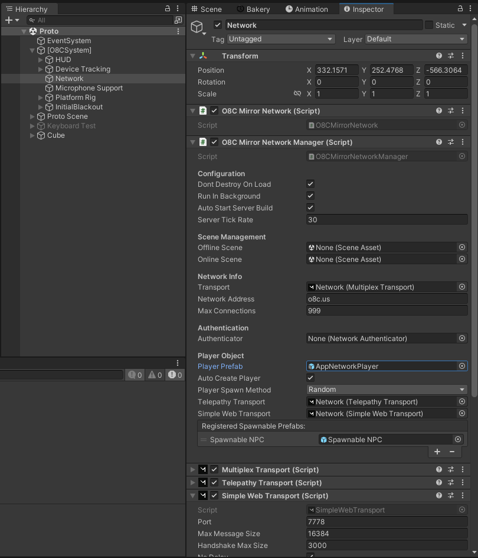
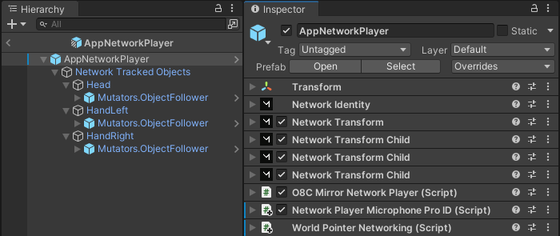
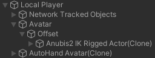

|
Playpen 1.0
A persistent multi-platform multiplayer Virtual Reality experience developed with Unity
|
Loading...
Searching...
No Matches
|
Playpen 1.0
A persistent multi-platform multiplayer Virtual Reality experience developed with Unity
|
When Mirror connects, the prefab set in the Player Prefab editor variable for the O8CMirrorNetworkManager component of the Network child GameObject of the [O8CSystem] GameObject is instantiated. The app has the AppNetworkPlayer prefab set for this value.

AppNetworkPlayer Specification
This prefab is composed of GameObjects for the head, and each hand. The root GameObject contains Network Transform Child components for each of these child GameObjects, which networks the transform of these GameObjects. Each child GameObject has an ObjectFollower child GameObject, which has the parent object as the source. This allows other objects to follow these objects, by being added as a target.

AppNetworkPlayer Hierarchy
The AppNetworkPlayer prefab contains the O8CMirrorNetworkPlayer component. The Start method of this component calls O8CSystem.Instance.PlayerConnection.PlayerConnected. This results in an action being invoked, which results in the calling of PlayerConnectionHandler.OnLocalPlayerConnected. This method uses an instance of the AvatarFactory component to instantiate the avatar, "Anubis2 IK Rigged Actor", as a child of the player. If the player being created is the local player, the "AutoHand Avatar" is instantiated as a child of the player.

Local Player Hierarchy
Callflow for local player root and sub group creation
On the server, the Start method of the NPCSpawner component of the NPC Spawner scene GameObject creates and initializes the NPC GameObject. The GameObject instantiated is the prefab specified in the NPCSpawner.SpawnableNPCPrefab editor value, which is set to the Spawnable NPC prefab. This prefab contains a SpawnableIKRiggedActor component. The Start method of this component (indirectly) instantiates the prefab specified by the actorID value, which is set to "Anubis2" by NPCSpawner.Start, which maps to the Anubis2 IK Rigged Actor prefab. After instantiating the prefab, the the prefab is configured as a SpawnableIKRiggedActor (NPC). IK components AND THE HEAD AND HAND/CONTROLLER TRACKING are disabled.
{kind=link}
{kind=link}
{kind=link}